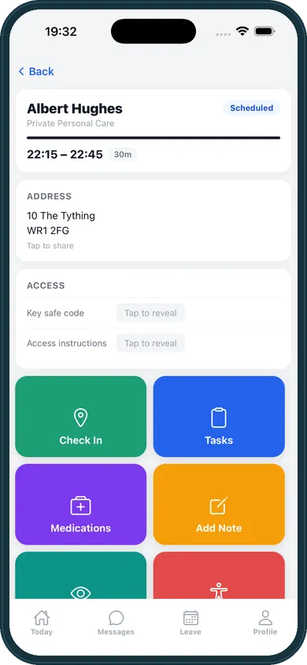
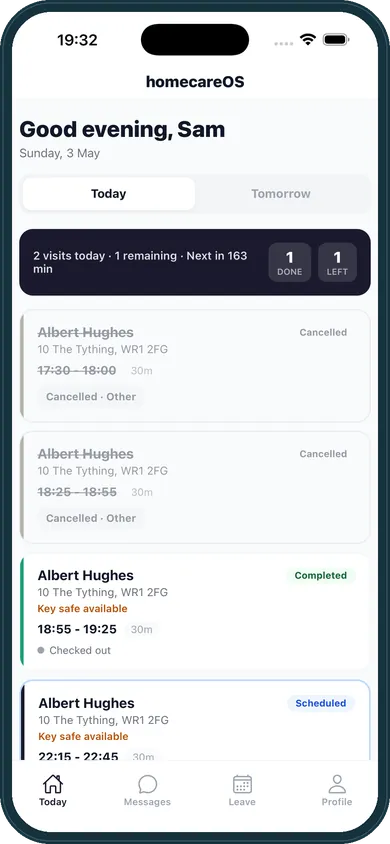

How carers clock in and out of a visit
Know that each visit happened, when it started and how long it lasted, from the carer’s own phone. No landline calls from the client’s home, and a record that says how arrival was established.
Proof of Every Visit, Without the Landline
Old call monitoring meant carers ringing a freephone number from the client’s landline. homecareOS does it from the carer app. A carer clocks in by GPS, an NFC tag in the home, a printed QR code, or an office entry when something has gone wrong, and the method is stamped on the visit. Every GPS, NFC and QR clock in and clock out is checked against the person’s registered address, and anything beyond 150 metres is flagged for a coordinator rather than blocked.

What You Get
Four Ways to Clock In
GPS, an NFC tag in the home, a printed QR code, or an office entry. Whichever was used is stamped on the visit, and an office entry is never dressed up as a verified one.
Checked Against the Address
Clock in and clock out are corroborated against the registered address. Past 150 metres the record flags itself for a coordinator, without locking an honest carer out.
Works With No Signal
Clock in and clock out are held on the phone and sent in order when a connection returns, so a dead zone costs nothing.
Late and Missed, Your Thresholds
Set how many minutes past the start a visit counts as late and then missed. The defaults are 15 and 45 minutes, and each agency can change them.
Clock-Out Rules
Optionally require tasks, a care note, medications or observations before clock out, and choose whether the app warns, asks for a reason or blocks.
Actual Time Feeds Pay and Billing
Actual visit times flow into timesheets, pay and invoices, kept separate from planned and charged time, so contract monitoring and payroll agree.

The carer’s day on one screen
Each visit with its time window, address and status. Tap in to clock in by whichever method your agency uses, then record the visit.
Included Today
GPS, NFC, QR code and office clock in
Method stamped on every visit
Clock in and out corroborated within 150 metres of the address
Out-of-range records flagged, not blocked
Offline clock in and clock out
Per-agency late and missed thresholds
Missed visits flagged to the office automatically
Optional clock-out rules: warn, reason or block
Clock-in report for contract monitoring
Visit completeness reporting
Commissioner portal visit view for local authority contracts
Actual time feeding timesheets, pay and invoices
Electronic Call Monitoring: your questions answered
Related Features
See Call Monitoring in a 15-Minute Demo
We will show you a carer clocking in on the phone and what the office sees a moment later. Free for your first 5 carers, with no setup fee and no minimum contract.
Compare homecareOS to your current software
See how we stack up against every major UK home care platform, feature by feature, transparent pricing, no fluff.